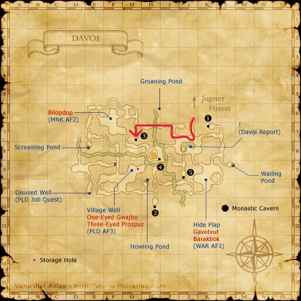
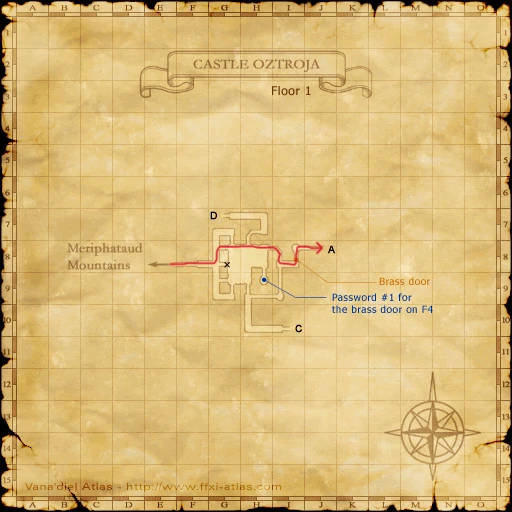
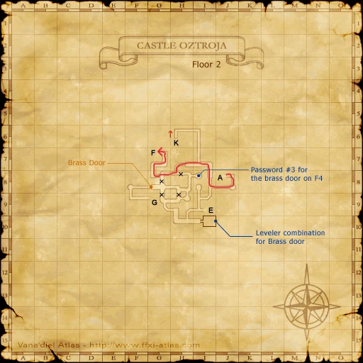
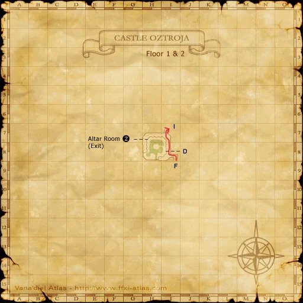
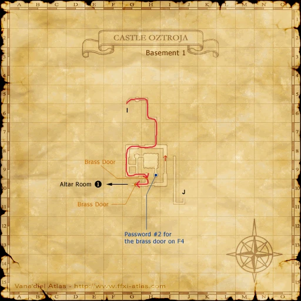
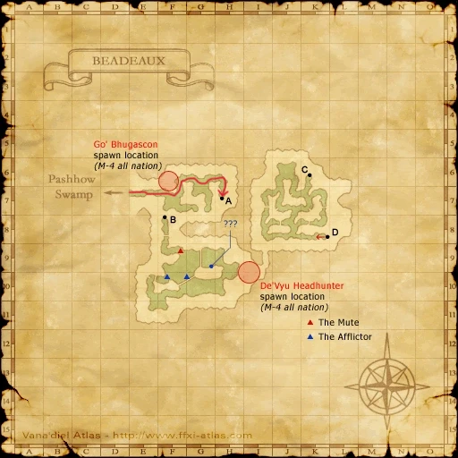
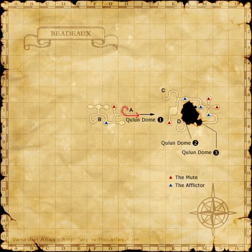

Before you begin
Be allied with San d'Oria, have Rank 4, and finish the preceding required story steps. Raise Rank Points if the mission is not offered.
Accept the mission before following its route. If the guard does not offer it, finish your current mission and any closing scenes, then raise Rank Points with crystals at a Conquest guard if required.
Items and key items
| Item — open for its source | Type | Where it comes from |
|---|---|---|
| Tenshodo Invite | Inventory item | A player who has completed Tenshodo Membership receives this transferable invitation. Obtain one from another player or an actual AH listing, then trade it to Ghebi Damomohe in Lower Jeuno (I-7). Alternatively complete the application-form route yourself; it rewards both an invitation and the permanent member’s card. |
| Tenshodo Member’s Card | Key item | Complete Tenshodo Membership with Ghebi Damomohe in Lower Jeuno (I-7). |
| Archducal Audience Permit | Key item | Accept Magicite at the San d’Oria embassy’s rear door in Ru’Lude Gardens. |
| Letter to Aldo | Key item | Receive the opening Magicite scene at the Audience Chamber, Ru’Lude Gardens (H-6). |
| Silver Bell | Key item | Aldo grants it when you deliver the Letter to Aldo. |
| Coeurl Meat | Inventory item | Obtain one slice from the Coeurl-family drop sources below or from an actual Auction House listing under Food → Ingredients. For Magicite, obtain Aldo’s Silver Bell first, accept Crest of Davoi from Baudin at Upper Jeuno (G-8), then trade him the meat. |
| Crest of Davoi | Key item | Accept Baudin’s request in Upper Jeuno (G-8) after obtaining the Silver Bell. Trade him one Coeurl Meat. |
| Yagudo Torch | Key item | After Aldo, speak to Paya-Sabya in Upper Jeuno (I-8), then Muckvix in Lower Jeuno (H-10). |
| Quadav Charm | Inventory item | Dropped by De’Vyu Headhunter on Beadeaux’s upper level around (I-9). Accept Sattal-Mansal’s Beadeaux requests after Aldo’s Silver Bell, then trade the charm by itself at Lower Jeuno (J-8) for the Coruscant Rosary. |
| Quadav Augury Shell | Inventory item | Dropped by Go’Bhu Gascon on Beadeaux’s upper level around (F-6). Trade one shell by itself to Sattal-Mansal at Lower Jeuno (J-8), after accepting his requests, for the Black Matinee Necklace. |
| Coruscant Rosary | Key item | Accept Mysteries of Beadeaux I from Sattal-Mansal, then trade him one Quadav Charm. |
| Black Matinee Necklace | Key item | Accept the Beadeaux requests from Sattal-Mansal, then trade him one Quadav Augury Shell. |
| Magicite: Optistone | Key item | Pass Davoi’s Wall of Dark Arts at (G-7), enter Monastic Cavern and examine Magicite. |
| Magicite: Orastone | Key item | Follow the Castle Oztroja torch-door route into the Altar Room, then examine Magicite. |
| Magicite: Aurastone | Key item | Obtain both Beadeaux access key items, enter Qulun Dome via Beadeaux’s underground route, then examine Magicite. |
| Airship Pass | Key item | Return all three Magicites to the Audience Chamber in Ru’Lude Gardens. |
| Message to Jeuno | Key item | Finish Magicite by reporting to Nelcabrit at the San d’Oria embassy in Ru’Lude Gardens. |
Prerequisite quests
| NPC | Quest / step | Reward |
|---|---|---|
| Ghebi Damomohe — Lower Jeuno (I-7) | Tenshodo Membership | Tenshodo Member’s Card + Tenshodo Invite |
| Baudin — Upper Jeuno (G-8) | Crest of Davoi | Crest of Davoi |
| Paya-Sabya — Upper Jeuno (I-8); Muckvix — Lower Jeuno (H-10) | Yagudo Torch | Yagudo Torch |
| Sattal-Mansal — Lower Jeuno (J-8), Tenshodo headquarters | Mysteries of Beadeaux I | Coruscant Rosary |
| Sattal-Mansal — Lower Jeuno (J-8), Tenshodo headquarters | Mysteries of Beadeaux II | Black Matinee Necklace |
People in this mission

Walkthrough
1. Accept Magicite in Jeuno
- Speak to Nelcabrit at the San d’Oria embassy in Ru’Lude Gardens (G-9). If it is unavailable, raise Rank Points through your Conquest guard.
- Examine the embassy’s rear door to accept Magicite and receive the Archducal Audience Permit. Examine the Audience Chamber upstairs at (H-6) for the Letter to Aldo.
2. Enter the Tenshodo headquarters
- If you lack the Tenshodo Member’s Card, complete Tenshodo Membership first. Its linked page gives both the application route and the Tenshodo Invite trade route.
- Inside Neptune’s Spire in Lower Jeuno, pass the headquarters door at (J-7) and speak to Aldo at (J-8). He exchanges the letter for the Silver Bell and advances the mission.
3. Arrange every stronghold’s access
- With the Silver Bell, speak to Baudin in Upper Jeuno (G-8), accept his request, and trade one Coeurl Meat for the Crest of Davoi.
- Speak to Paya-Sabya in Upper Jeuno (I-8), then Muckvix in his Lower Jeuno shop (H-10) for the Yagudo Torch. A preliminary Muckvix conversation gives background; Paya-Sabya’s scene is the required flag in the reviewed mission.
- Speak to Sattal-Mansal inside the Tenshodo headquarters at Lower Jeuno (J-8). His conversation accepts Mysteries of Beadeaux I and II together.
4. Obtain the Beadeaux access items
- Travel to Beadeaux through Pashhow Marshlands. Defeat De’Vyu Headhunter on the upper level around (I-9) for one Quadav Charm, and Go’Bhu Gascon on the upper level around (F-6) for one Quadav Augury Shell.
- Return to Sattal-Mansal. Trade the Quadav Charm by itself for the Coruscant Rosary, then the Quadav Augury Shell by itself for the Black Matinee Necklace. Do not combine both in a single trade.
5. Collect the three Magicites
- Davoi: enter from Jugner Forest (G-12). Reach the Wall of Dark Arts at Davoi (G-7); examine it using your Crest of Davoi, then enter Monastic Cavern. Examine Magicite in the chamber for Magicite: Optistone.
- Castle Oztroja: enter from Meriphataud Mountains (L-8). Operate the correct lever at the first Brass Door (I-8); the other lever opens the floor trap. Climb onto map 3, continue through (G-7) to the upper outside walkway, then go north without dropping down. Follow the passage to the torch door at map 2 (H-9).
- Use the Yagudo Torch at that door, continue south and through the next Brass Door to the Altar Room. Finish the entry scene and examine Magicite for Magicite: Orastone.
- Beadeaux: with the Coruscant Rosary and Black Matinee Necklace, take the tunnel around (H-7), follow the underground passage to Qulun Dome, and pass its sealed door. Examine Magicite for Magicite: Aurastone. Watch the affliction devices on the approach; silence prevents casting your travel spells.
6. Receive the pass and promotion
- With all three Magicites, examine the Audience Chamber at Ru’Lude Gardens (H-6). The scene consumes the three stones and grants the Airship Pass. If you already own that pass, the native replacement is 20,000 gil.
- Return to Nelcabrit at the embassy. This final report grants Rank 5, another 10,000 gil and Message to Jeuno. Leaving after the Audience Chamber scene does not complete the embassy report.
Important notes
- Existing access key items from another nation can be reused. You still need the new nation’s embassy, Audience Chamber and Aldo scenes.
- Bring travel protection and a way home. All three Magicites are key items; they do not appear in inventory and cannot be bought.
Route maps





















Completion and reward
Rank 5; 10,000 gil; Airship Pass (or 20,000 additional gil if already owned); Message to Jeuno
Area maps
Open a zone below, then select a map to enlarge it. Match the named floors and grid coordinates in the steps; these are reference area maps, not a live position tracker.
Ru'Lude Gardens


Lower Jeuno


Upper Jeuno


Davoi


Beadeaux


Castle Oztroja


Altar Room


Qulun Dome


References
Native mission script used by the Zenith baseline · HorizonXI route and map reference
Written for Zenith from the reviewed mission steps. Battlefield conditions follow the server’s entry message; Horizon-exclusive wardrobe rewards are not part of these rewards.